Outcome-driven design in an agentic AI world
When software acts on your behalf, the product is no longer the screen. Design moves from interfaces to outcomes — and to the trust that makes delegation possible.
Home of DDX · Convening leaders in Tokyo
We know where human and technology meet next
The company behind DDX — a global think tank on the future of digital experience, convening the leaders who are shaping it.
What we learn there is the point. Across stages in seven cities, with design leaders, product teams, founders and researchers, we see where human and technology meet next — before it reaches anyone’s roadmap.
That foresight is what partners come to us for. When we build — brand, product, environment, event — it starts from that view, not from a list of deliverables.
The themes our speakers, partners and community keep returning to — and the direction we build toward.
When software acts on your behalf, the product is no longer the screen. Design moves from interfaces to outcomes — and to the trust that makes delegation possible.
Voice, spatial, ambient, embodied. The interface is dissolving into the environment, and the craft becomes deciding what should stay visible at all.
How design moves technology, business and society forward — measured in decisions changed and markets opened, not in deliverables shipped.
Brand, product, place and event as one continuum. The strongest experiences no longer respect the line between physical and digital.
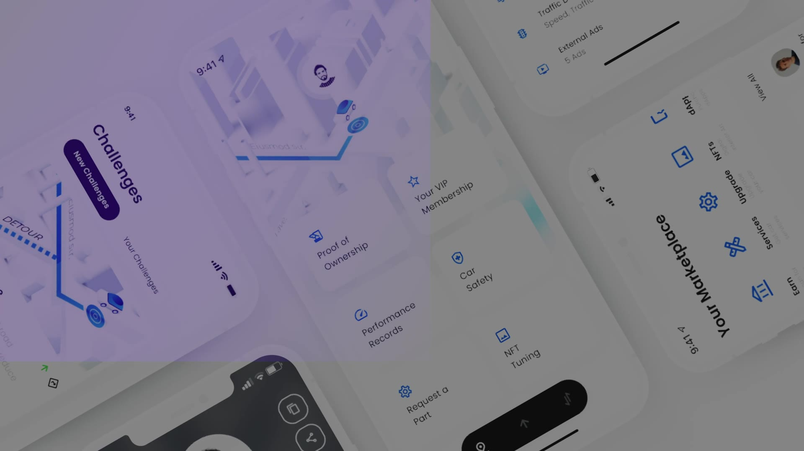
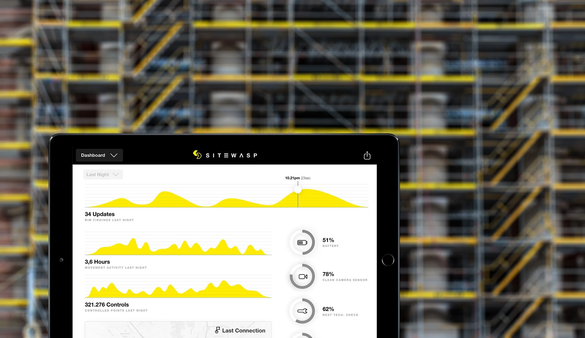
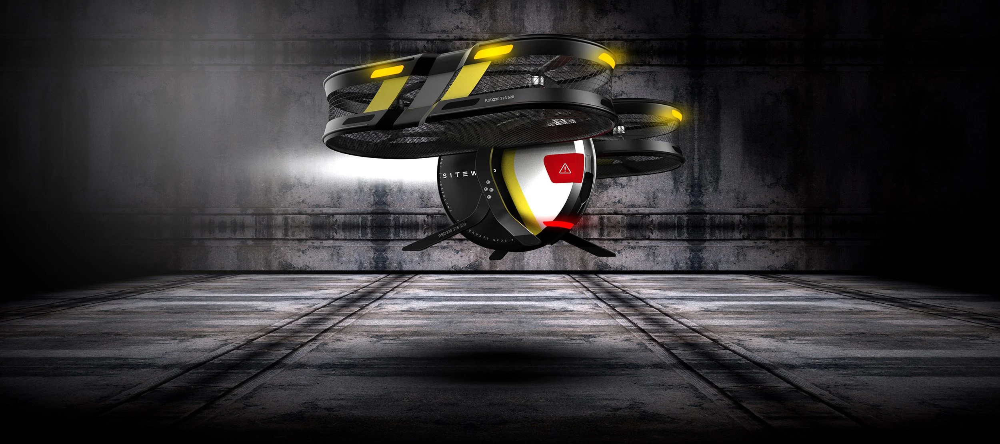
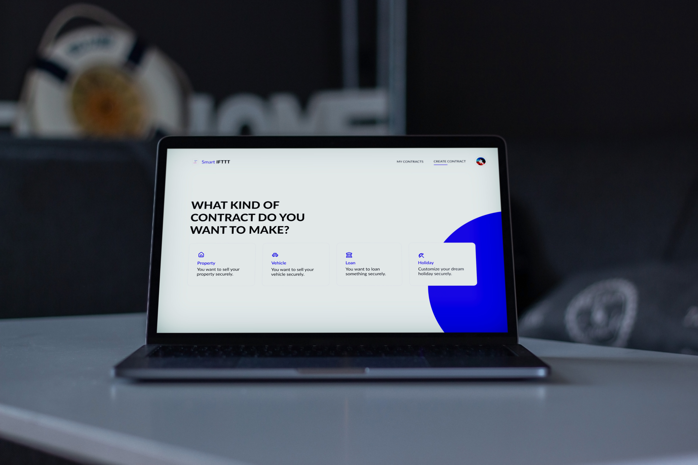
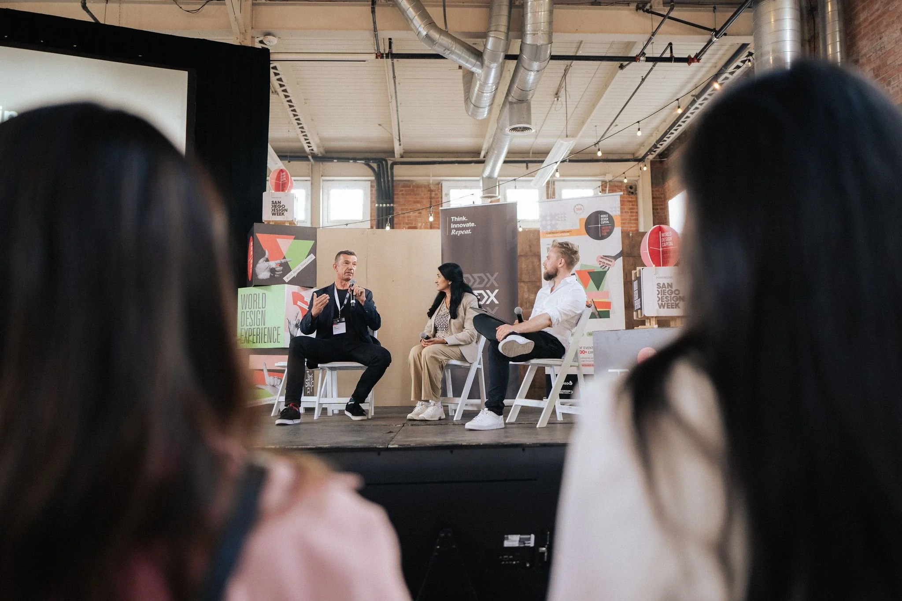
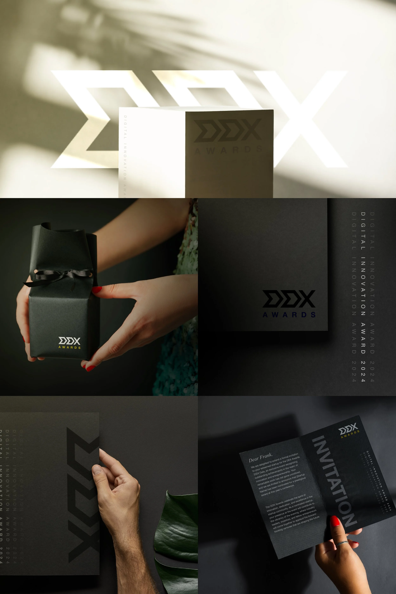
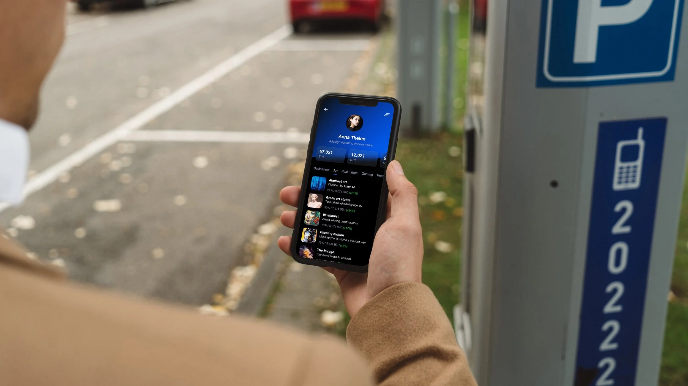
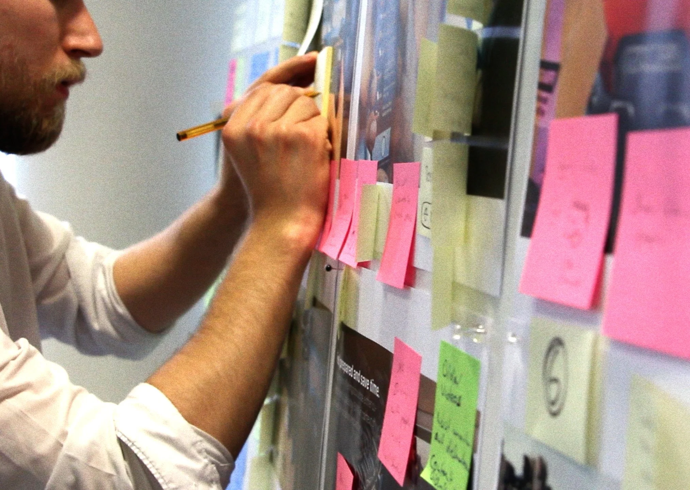
A global think tank and community, and our own conference brand — curated end to end, from the first coffee to the conversations long after the closing session.
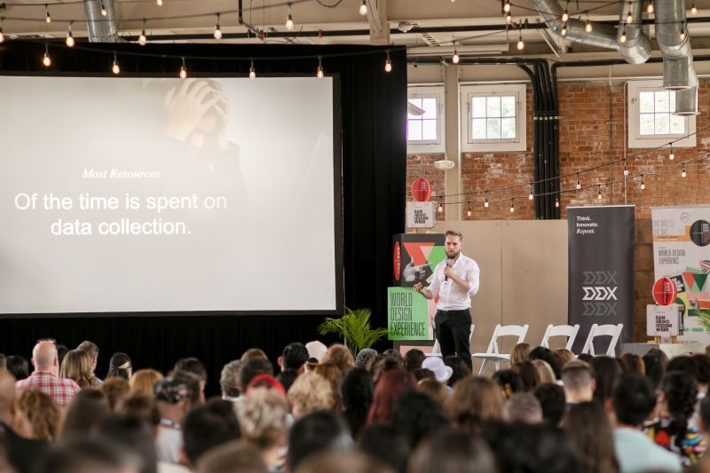
A single-day format for design leaders, product teams, founders and researchers — exploring how design moves technology, business and society forward, with room around the programme for the connections that outlast it.
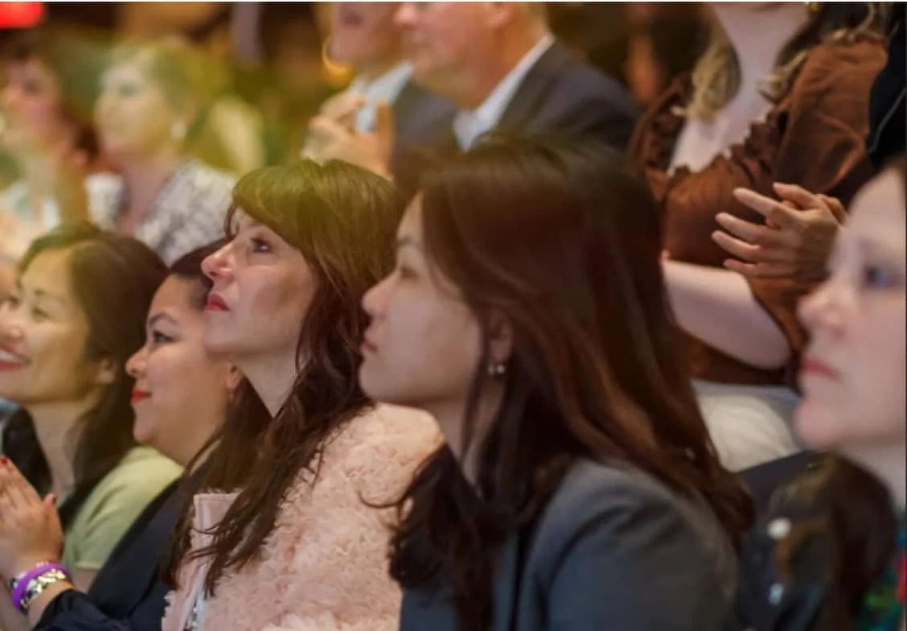
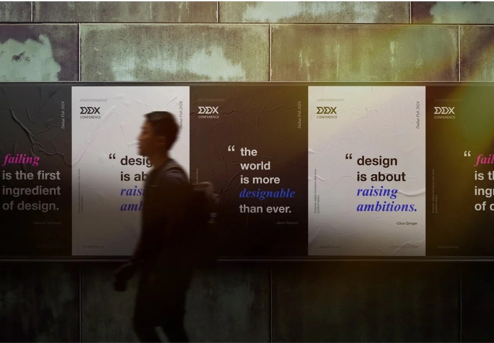
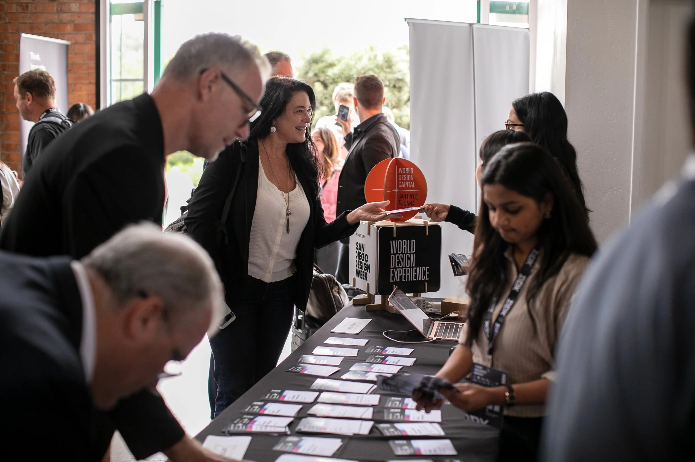
We explore the future — and turn breakthroughs into experiences people actually want.
We make technological breakthroughs accessible and turn them into joyful product and brand experiences so people have better lives. We fast-forward to potential futures of businesses, and we partner with the strongest and most ambitious startups and companies in order to drive positive impact and accelerate the future for the better.
Brand and campaign design across our own ventures and our partner work — from conference identity through to product surfaces. On-site with the team in Dubai.
View the roleNothing listed that fits? Tell us what you would bring. We hire for range and curiosity rather than for a job title — show us the thinking behind the work.
Send an open applicationThe conversation happens at DDX — on stage, in the rooms around it, in seven cities a year. Start there.
Explore DDX